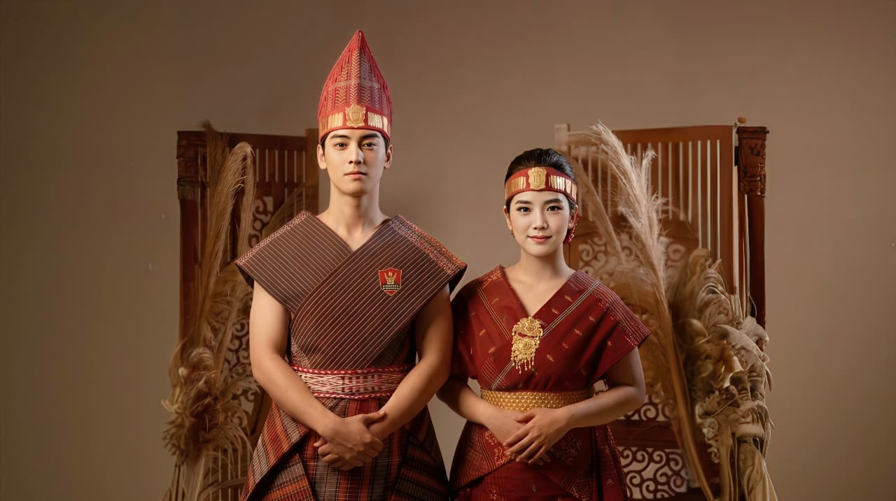
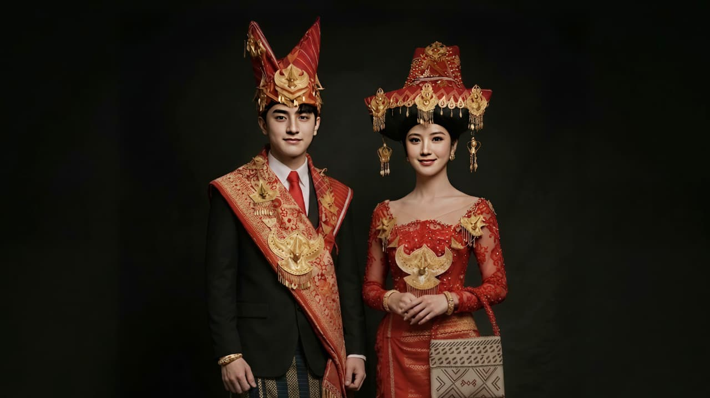
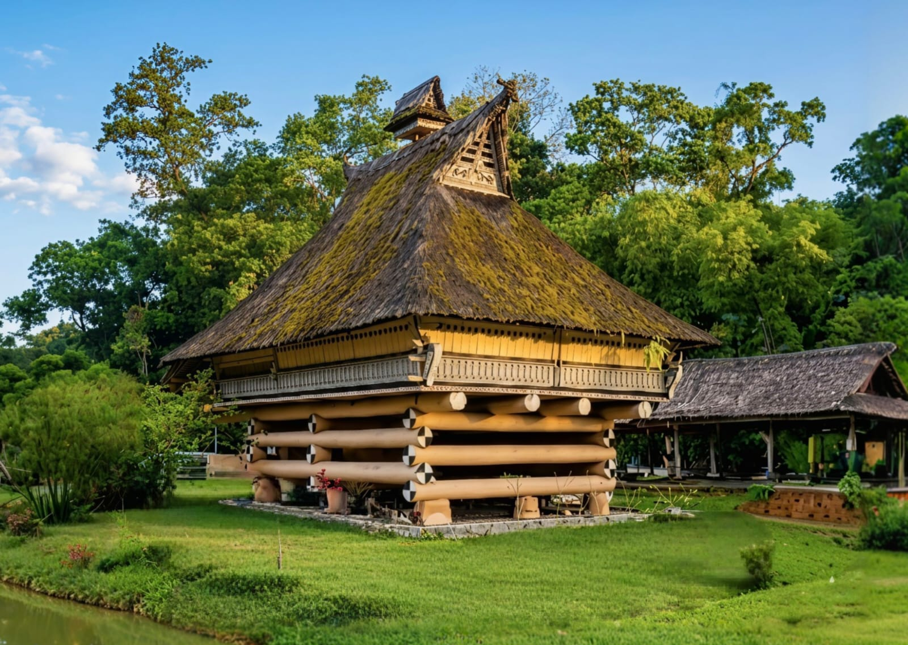
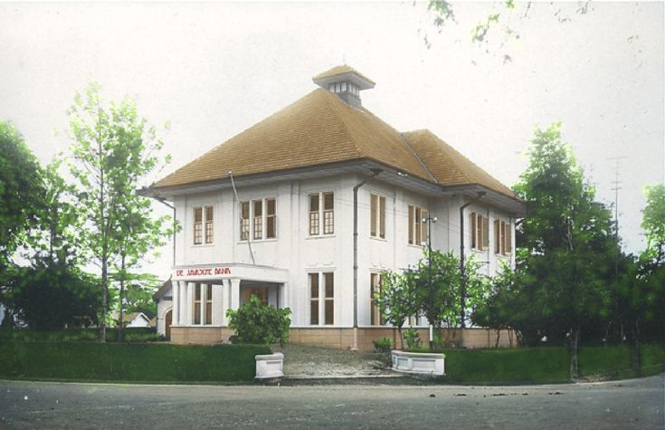
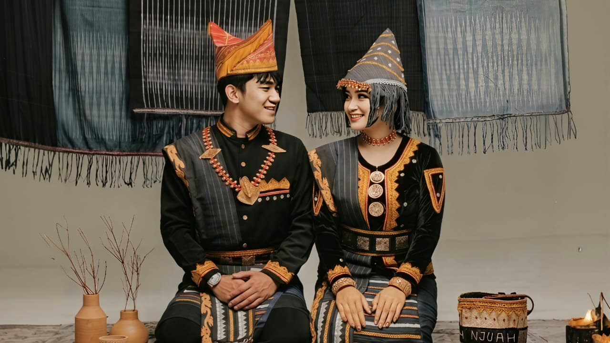
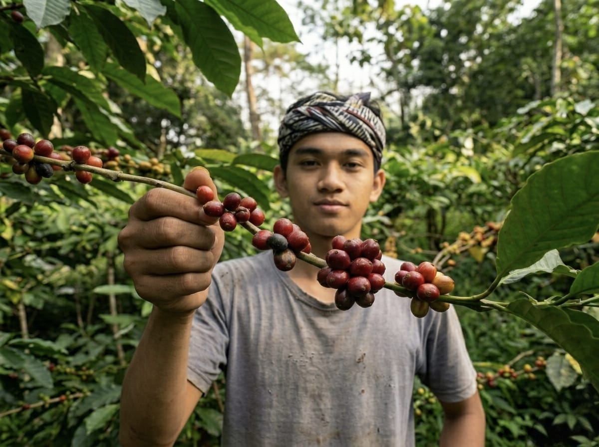
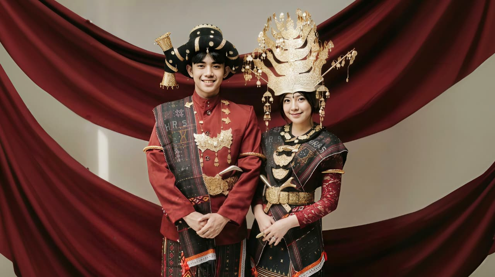
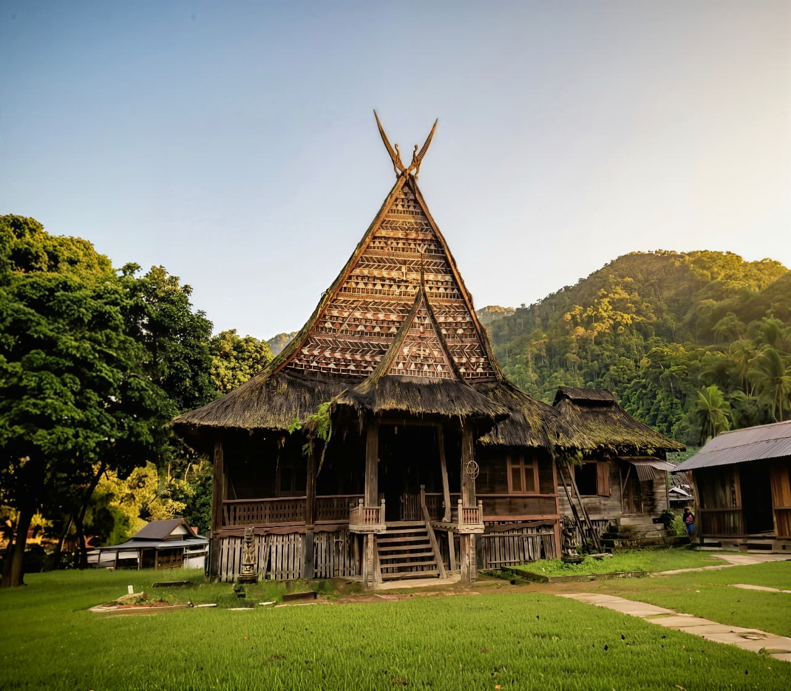

◆ Keluarga Besar Batak ◆
Lima Suku Batak


Batak Toba
Sub-suku Batak Terbesar
Suku Batak Toba adalah sub-suku Batak yang paling dikenal dan terbesar. Mereka mendiami kawasan sekitar Danau Toba, danau vulkanik terbesar di dunia yang juga merupakan rumah bagi Pulau Samosir. Sistem kekerabatan mereka didasarkan pada marga (klan patrilineal) yang sangat kuat, dengan falsafah hidup Dalihan Na Tolu sebagai landasan sosial budaya.

Batak Karo
Suku Pegunungan Sumatera
Suku Batak Karo mendiami dataran tinggi Karo yang subur di kaki Gunung Sinabung dan Sibayak. Dikenal sebagai petani yang handal, masyarakat Karo memiliki tradisi pertanian yang kaya. Mereka memiliki sistem kekerabatan unik bernama Rakut Sitelu atau Tiga Ikatan yang menjadi pilar kehidupan sosial. Aksara dan bahasa Karo berbeda dari sub-suku Batak lainnya.


Simalungun
Kerajaan Tua di Sumatera
Suku Simalungun memiliki sejarah kerajaan yang panjang dengan empat kerajaan utama: Siantar, Tanah Jawa, Raya, dan Purba. Mereka dikenal dengan seni budaya yang kaya, khususnya dalam musik tradisional gonrang dan tari tortor. Sistem sosial mereka berdasarkan kekerabatan Tolu Sahundulan Lima Saodoran yang mengatur hubungan antar kelompok marga.


Batak Pakpak
Suku Penjaga Hutan Dairi
Suku Batak Pakpak mendiami wilayah Kabupaten Dairi dan Pakpak Bharat, di pegunungan yang berbatasan dengan Aceh. Mereka dibagi menjadi lima kelompok berdasarkan wilayah: Simsim, Pegagan, Kelasen, Boang, dan Klasen. Suku Pakpak dikenal sebagai penghasil kopi Sidikalang yang terkenal ke seluruh dunia, serta memiliki tradisi pengobatan tradisional yang kaya.


Mandailing
Batak dengan Pengaruh Islam Kuat
Suku Mandailing adalah sub-suku Batak yang telah lama memeluk agama Islam, membedakan mereka dari sub-suku Batak lainnya. Mereka mendiami wilayah Mandailing Natal di selatan Sumatera Utara. Budaya Mandailing merupakan perpaduan unik antara adat Batak dengan nilai-nilai Islam, menciptakan kekayaan tradisi tersendiri. Sistem marganya masih kuat dengan adat Dalihan Na Tolu.